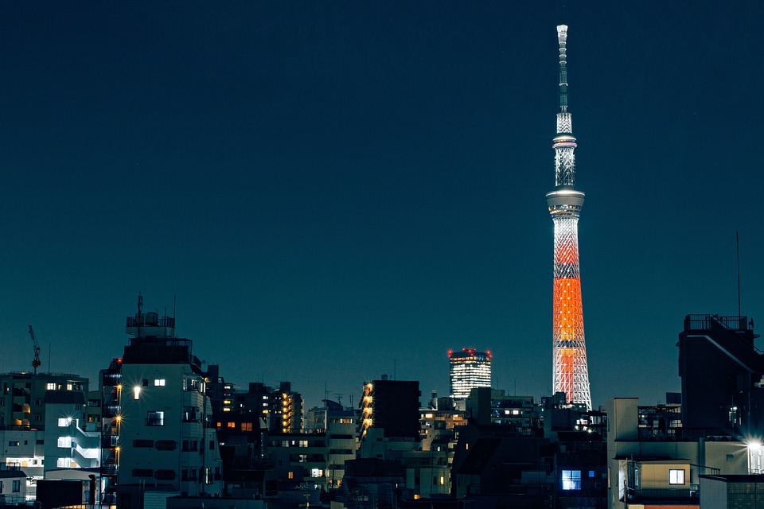

LANDMARKS
Tokyo, Japan's capital, infuses a mixture of traditional and modernized landmarks and structures. From shrines to skyscrapers, here's a list of places you'd want to visit when you come to town.
The Tokyo Skytree
This landmark is a tower built primarily for communications and tourist observation. Located in Sumida district of Minato, the skytree contains a restaurant, several observation decks, and a broadcasting station. Commissioned in 2012, it quickly gained notoriety due to its length and nighttime color schemes. As of March 2017 it is the tallest standing structure in japan at approximately 2,100 ft.
The Meiji Shrine
Meiji Shrine, located in Shibuy, is a sanctuary dedicated to the spirits of Emperor Meiji and his spouse, Shoken. Originally built in 1920, in the middle of a forest it gives off a rural ambiance, making it a haven for the religious.
Sensoji Temple
The oldest temple in Tokyo, known as the focal point of Edo culture and customs, many festival and special occasion are often hosted within. The Japanese believe that a deity over watches the temple and grants restoration to the earth. The huge lanterns hung at entrance has much fame throughout Japan. Annually, the temples receives about thirty million followers.
The Ginza District
A large commercial district that houses many domestic and international stores and restaurants. Constructed over 400 years ago, the silver-coin was established in the district. After a destructive blaze incinerated most of the area in the 1870's, government modernization created a international hub. Ginza is a favorite destination for tourist and the youth of Tokyo.
The Imperial Palace
The Imperial Palace is the place Japan's Emperor calls home. Following reconstruction in 1868 after a fire, it plays host to various ceremonies and functions regularly. The grounds of the palace are also available to the general public on certain occasions and is surrounded by a number of attractions.
Tokyo National Museum

The Tokyo National Museum, is the oldest and largest museum in Japan. It features an extensive collection of artifacts and national treasures. Established in 1872, it has over 4,000 exhibitions on display at a time.
Ueno Park
Ueno Park is a massive park available for public use in the heart of Tokyo. The Park is known for its tourist friendly attractions including the Ueno Zoo, Kaneiji Temple, Shinobazu Pond, University Of Tokyo, Ueno Daibutsu, Shitamachi Museum, Bentendo Temple, National Museum of Western Art, Ueno Toshogu Shrine, Kiyomizu Kannon Temple, and the Tokyo Bunka Kaikan.